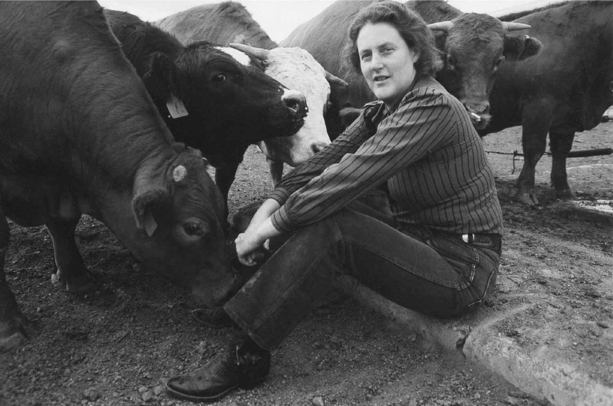

在写作这本书的过程中，我一直强烈地意识到使用例子时的冲突，例子有时是严重的经典自闭症病例，有时是非常高功能的病例以及阿斯伯格综合征。儿童和成人病例的例子也有差距。关于患上自闭症是什么感觉的那些轶事，全部来自高功能的成人。因此有一种危险，即自闭症谱系障碍的观点很大程度上向谱系的这个部分倾斜。这部分人被称作温和的自闭症并不一定正确，因为这些人有障碍。他们只是有时被补偿行为掩盖起来一点点而已。另一方面，他们的自闭症特征与经典病例相比的确要温和一些。
在我已经描述的研究中，实验通常依赖那些正常或高智力水平的参与者，因为那些技术和任务都对受试者要求很高。这些实验已经揭示了一些振奋人心的结果，大量描述这些实验，我问心无愧。当我记起我了解的经典病例，看起来所有五大理论都能派上用场来解释其行为，这些理论似乎能同时应用。但当我研究高功能病例时就不一样了。这时我的感觉是对具体个人的病例来说，部分而不是全部五大理论可以用来解释他们的困难。
所有这些使我思考，在未来研究中，人们可以对严重自闭症提出单独的问题，严重自闭症通常伴随着智力障碍，而温和的自闭症形式通常没有智力障碍。把一个群体的研究成果推广到另一个群体似乎不大可能，因此很明显有必要单独对待这些亚群体。我们就从那些高智商的开始吧。
在整本书中我们有过大量机会来看特殊人群的例子，他们有自闭症状况但能跟我们讲述他们的经历。坦普·葛兰汀就是这样的人。她作为作家、演讲家和动物行为的研究者而广受褒奖。坦普·葛兰汀的网站展示了她许多令人惊叹的才能。她能说出来高功能自闭症意味着什么，她强调思维方式的某些优势，对她来说她的思维方式是视觉思维。她对能够自立很满意，也显示了即使没有参与交互式交流，也可以过上充实、实现自我的人生。坦普·葛兰汀并不是唯一把她的生活、她的兴趣和心路历程写出来的自闭症人士。现在有很多书，那些极富才华的作者从第一人称的角度来揭露患有自闭症究竟是什么样。

图19 坦普·葛兰汀是自闭症的杰出人士的代言人。她写过几本书，讲述自闭症究竟是什么样。她设计了牲畜设备，并对动物有特殊的热爱。她在《翻译动物：利用自闭症之谜解码动物行为》（纽约：斯克里布纳出版社2005年版）一书里写了这一切